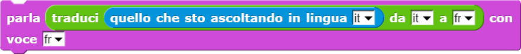

Effettua la sintesi vocale di una parola o frase (primo parametro) utilizzando la voce indicata nel secondo parametro.
Simple SNAP! conversation and AI-related blocks
Fare doppio clic sul file scaricato per aprirlo e lasciarlo in esecuzione in background.
NB: Se non state utilizzando Chrome Web Browser alcune funzioni potrebbero avere dei problemi.
Effettua la sintesi vocale di una parola o frase (primo parametro) utilizzando la voce indicata nel secondo parametro.
Registra la voce e la analizzata sulla base della lingua specificata nel parametro (ad esempio: "it" per italiano,
"fr" per francese, "en" per inglese, "es" per spagnolo, e così via). Infine, il blocchetto restituisce una parola
o frase di testo scritto corrispondente a ciò che Watson è riuscito a riconoscere nei suoni registrati.

In questo esempio, il programma incita a dire qualcosa, registra la voce e salva le parole comprese in una variabile
precedentemente creata. Infine parla dicendo l'unione della frase "Ho capito..." e delle parole capite.

Restituisce la traduzione della parola o frase scritta come primo parametro. Nel secondo parametro deve essere specificata
la lingua di origine e nel terzo parametro la lingua di destinazione ("it", "fr, "es" e così via).

In questo esempio, il programma aspetta che gli venga detto qualcosa, poi quello che ha capito in seguito al riconoscimento
vocale viene tradotto dall'italiano al francese. Infine effettua la sintesi vocale del risultato della traduzione,
parlando con una voce della medesima lingua.
NB: i blocchetti di istruzioni messi uno dentro l'altro vengono sempre eseguiti dal più interno al più esterno.

Per poter usare i blocchetti legati alla conversation, che si basa sul servizio IBM Watson Assistant, è necessario
possedere un account Watson e delle credenziali per la risorsa Assistant. Per farlo, segui questo tutorial.
Copiare e incollare le proprie credenziali, costituite da apikey e URL, nei blocchi di SNAP come illustrato qui
sopra. Le variabili apikey e URL sono già presenti in ogni nuovo progetto.
Thanks to eCraft2Learn for their amazing work!